Musculação personalizada
Treine com hora marcada e orientação profissional. A equipe monta seu treino de acordo com seu objetivo.
Consultar musculação personalizadaStudio In Prime · São Francisco, Niterói
Na Prime São Francisco, você treina com orientação profissional e um programa montado de acordo com seu objetivo. O agendamento limita o número de alunos por horário: a sala não lota e você treina com mais espaço, mais tranquilidade e mais atenção da equipe.
Combine seu horário com a equipe pelo WhatsApp.
Treine com hora marcada e orientação profissional. A equipe monta seu treino de acordo com seu objetivo.
Consultar musculação personalizadaPratique Pilates com hora marcada. Escolha o plano com ergometria ou consulte a opção Prime, que também inclui aulas coletivas e massagens relaxantes.
Quero saber maisVarie sua rotina com aulas de Spinning, Mobilidade, Yoga, dança e outras modalidades.
Conheça a unidade e experimente uma aula antes de escolher seu plano. Fale com a equipe pelo WhatsApp para consultar as modalidades disponíveis e combinar um horário. Como o treino é com hora marcada, a sala não lota.
Um treino pensado para o seu objetivo, com horário reservado, sala sem superlotação e acompanhamento da equipe.
Com hora marcada e limite de alunos por turno, a sala não lota: você treina com mais espaço, usa os equipamentos com tranquilidade e recebe mais atenção da equipe.
A equipe monta o seu programa de acordo com o seu objetivo, sem treino genérico.
Profissionais acompanham o seu treino e orientam a execução dos exercícios.
Personal trainer, Pilates, ergometria e aulas coletivas de Spinning, Mobilidade, Yoga, dança e outras modalidades na mesma unidade.
Estacionamento próprio, toalha de treino e água com gás à disposição.
Consulte a equipe sobre os serviços de estética e as massagens relaxantes.
Musculação, Pilates, Spinning, sala de massagem e áreas de apoio na unidade de São Francisco.
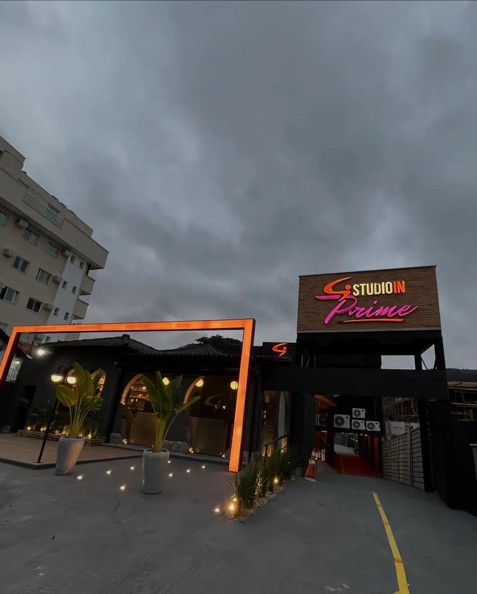
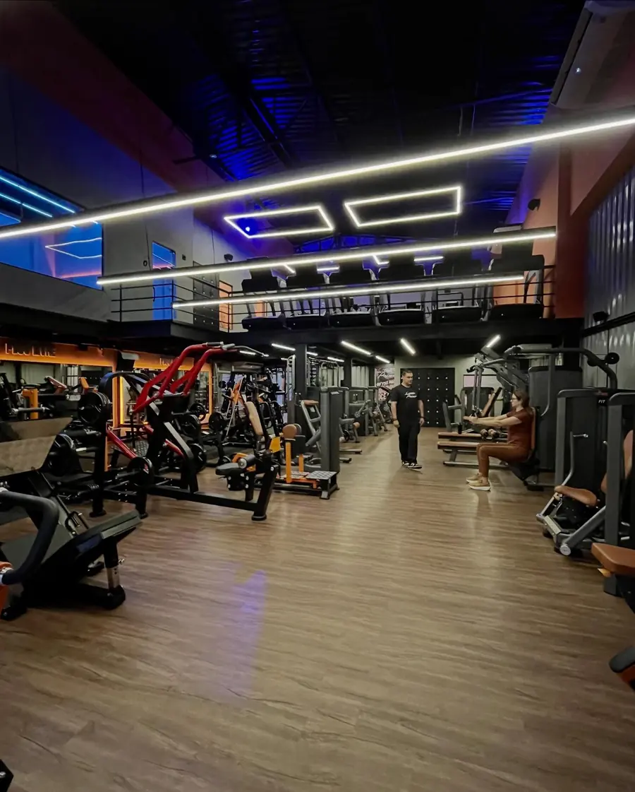
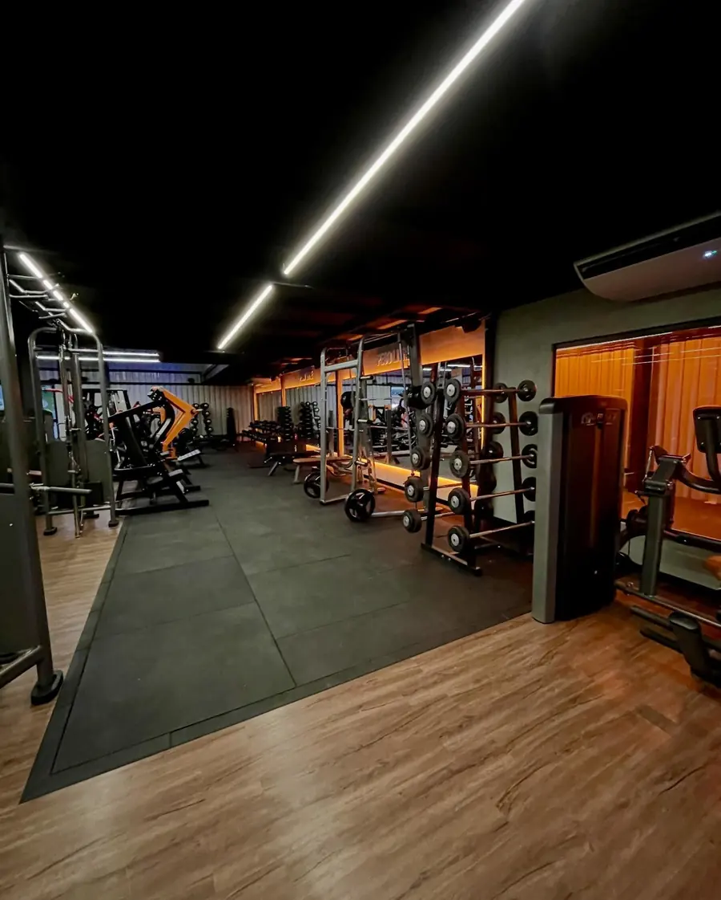
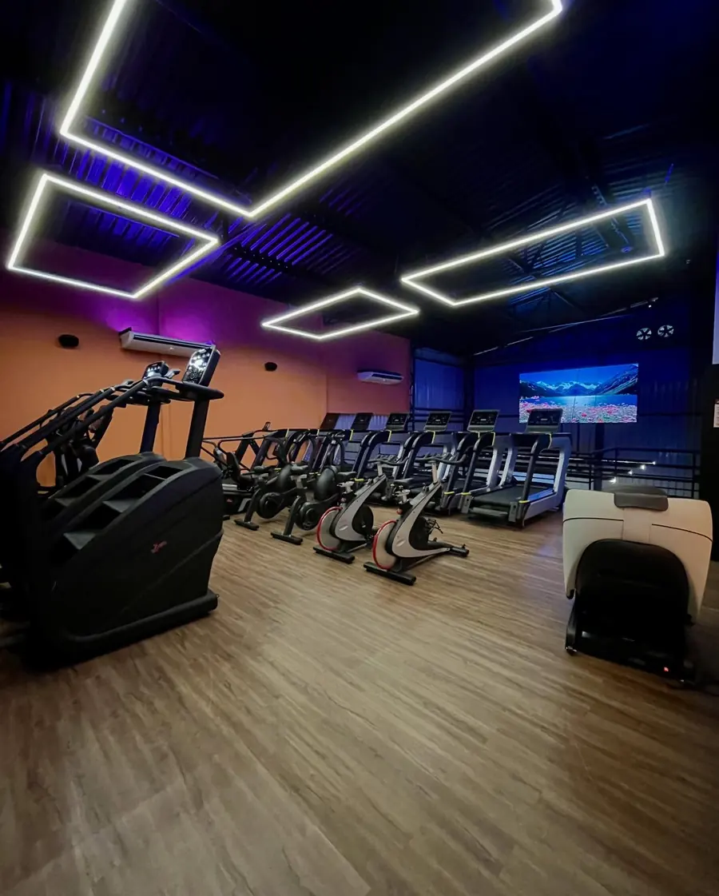
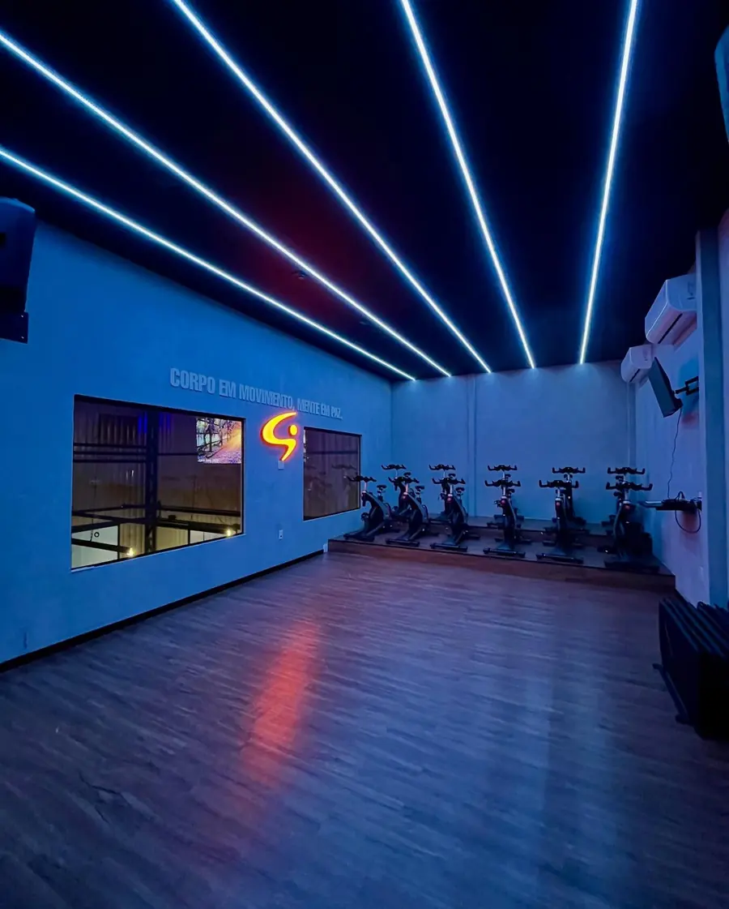
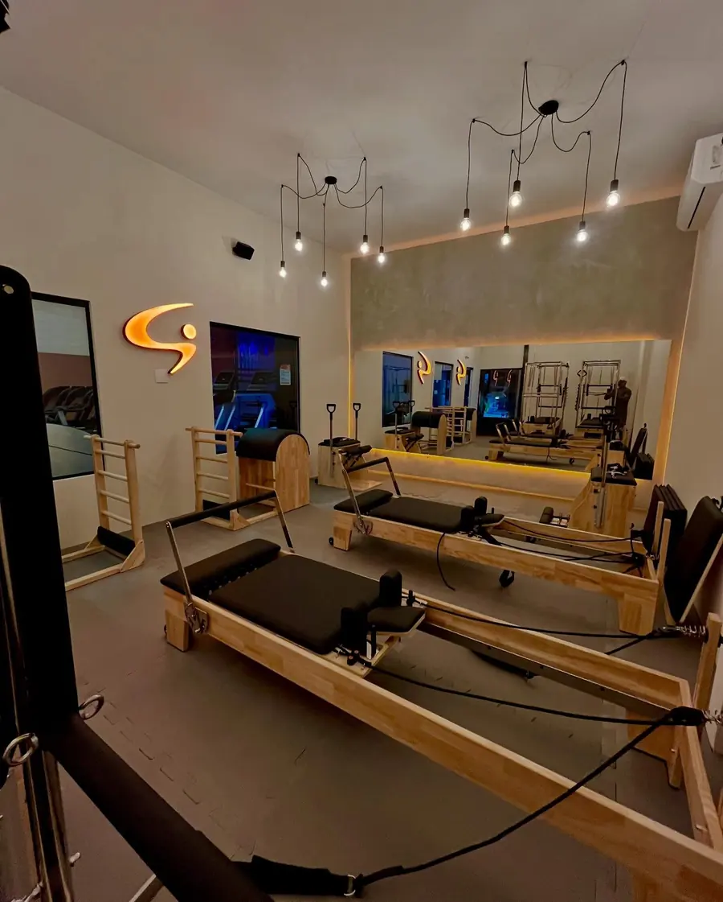
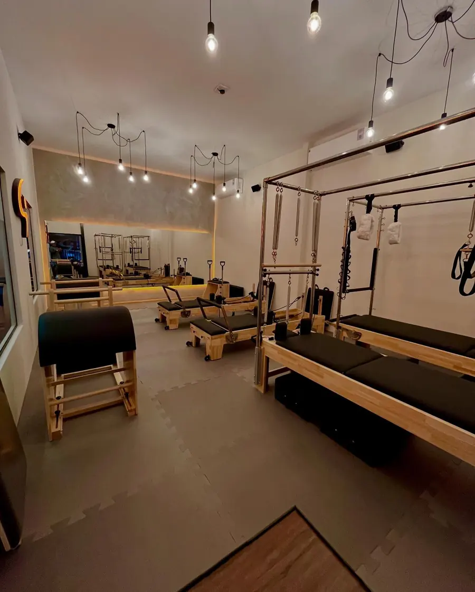
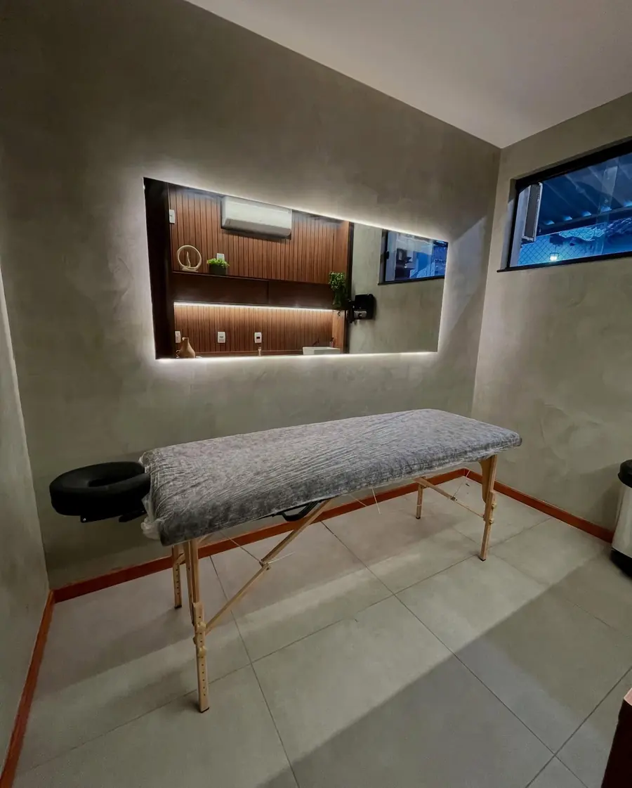
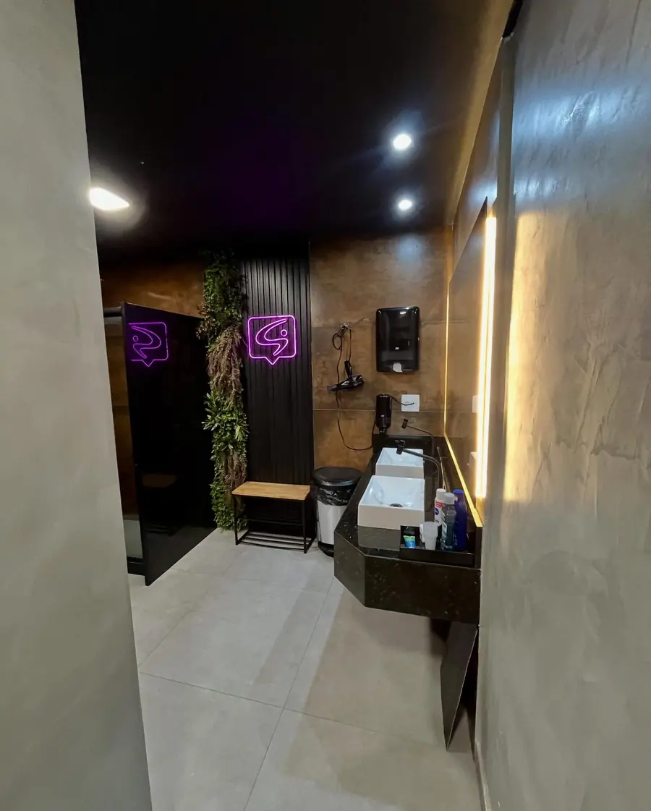
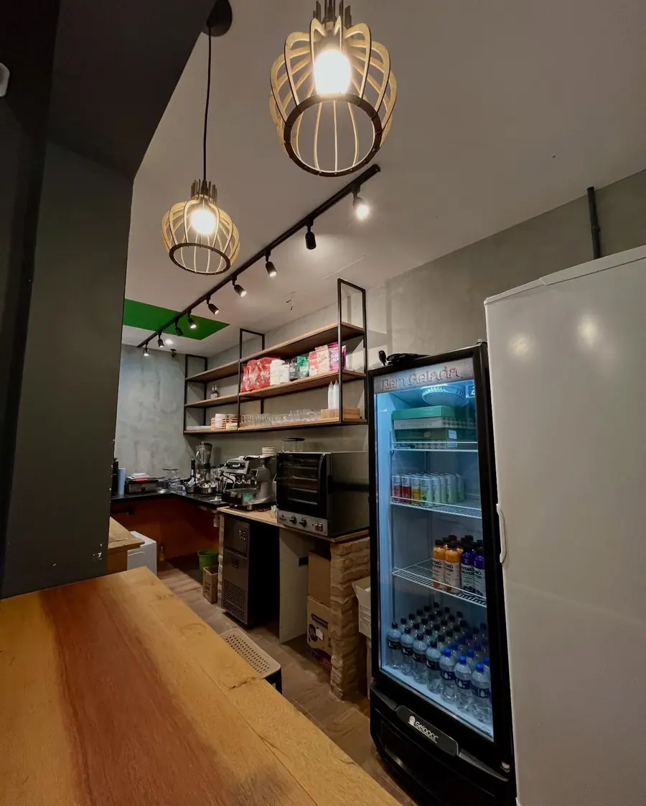
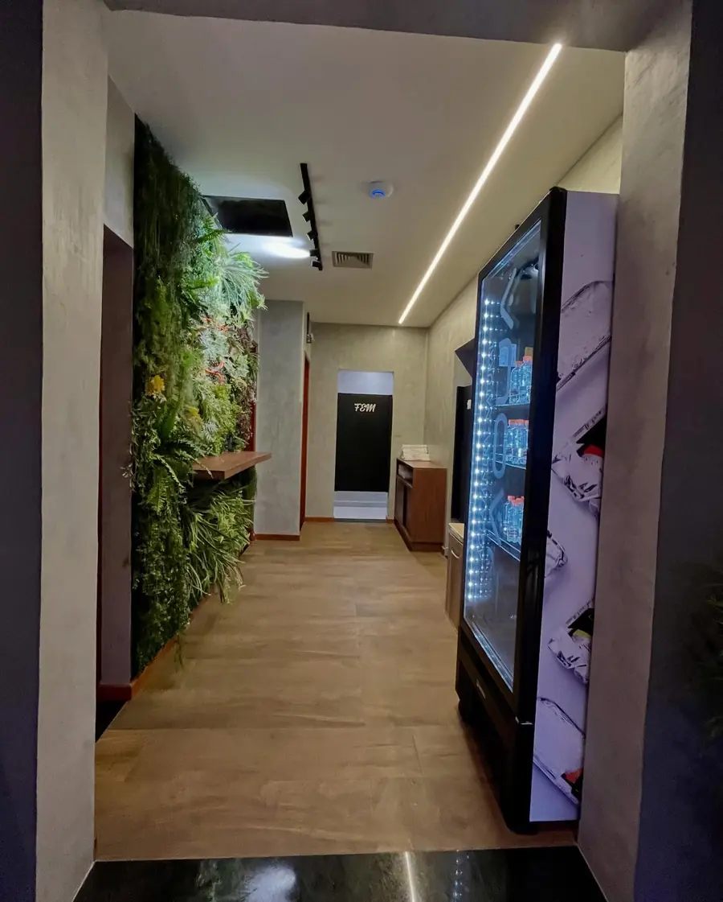
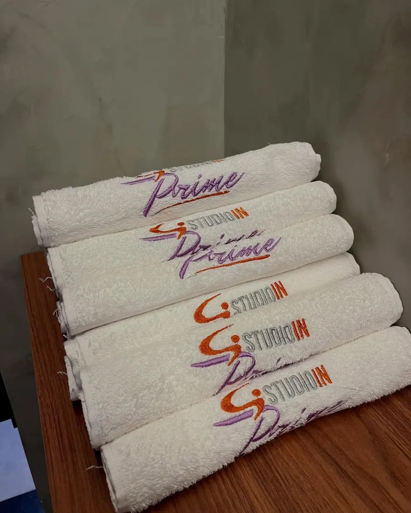
Veja o que o fundador do Studio In Prime conta sobre o Pilates da unidade e fale com a equipe para conhecer os horários.
Quero saber maisMuito mais que treinamento, uma experiência de bem-estar e wellness. Um “clube exclusivo”, com massagens inclusas nos planos, água com gás grátis, toalha de treino, aulas coletivas e um atendimento que dispensa apresentações.
Pratique Pilates na frequência que você escolher, com acesso à ergometria.
Escolha entre musculação personalizada e Pilates. O plano inclui ergometria, aulas coletivas e duas massagens relaxantes por mês.
De 1 a 5 vezes por semana, com opções trimestrais, semestrais e anuais. Consulte valores e taxa de adesão com a equipe.
Consulte a equipe sobre os serviços de estética e os horários disponíveis na unidade.
Consultar estéticaWhatsApp da unidade: (21) 99033-6065
Como chegarEscolha a modalidade que você quer experimentar e combine um horário com a equipe da Prime São Francisco. A aula experimental é gratuita.